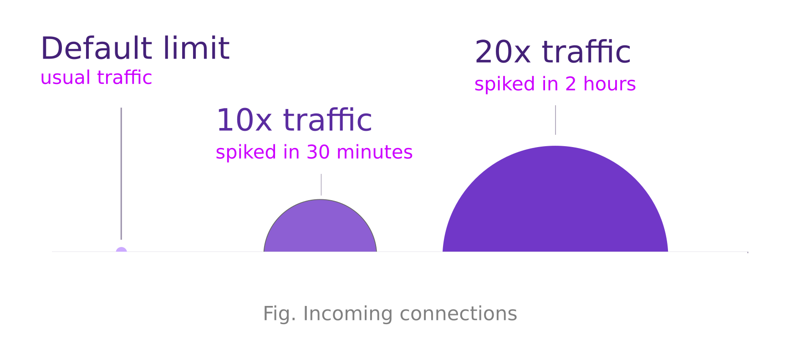
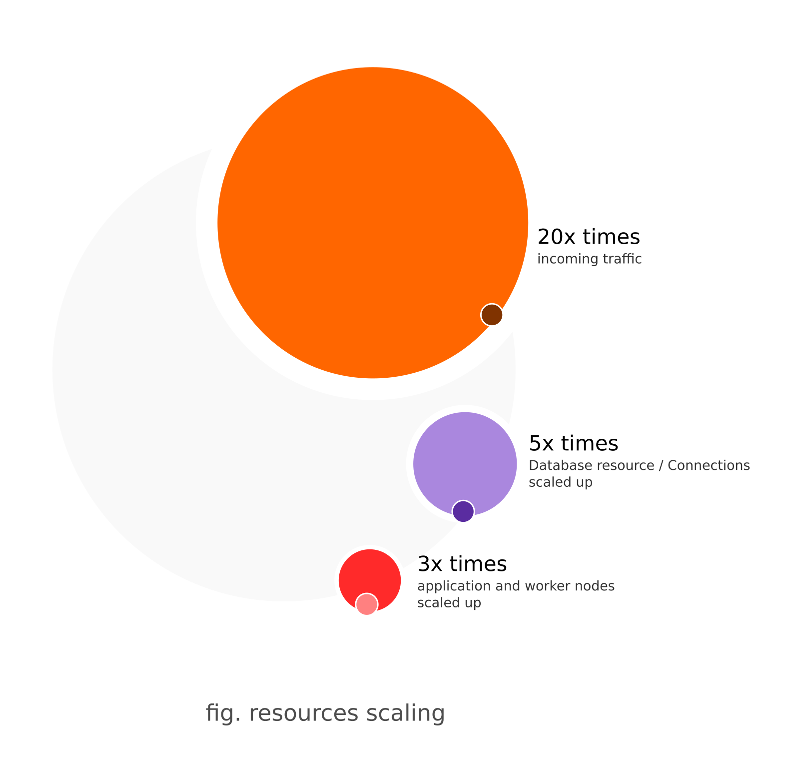

Due to several factors, our application became unreachable on the FIFA World Cup 2022 opening day. World Cup Football is undoubtedly the planet's biggest sporting phenomenon.
Coincidentally, our national election day and this year's World Cup Football opening match were scheduled on the same day. Even the election was among the prominent news headlines due to the lineup of independent and new candidates.
Leading payment instruments in the country faced a prolonged downtime around the opening match schedules.

Our Scope as a payment provider
Due to the Territory Distribution restrictions of FIFA World Cup 2022, customers had to pay 500 Rs + VAT to the MSOs (Multiple Systems Operators) to watch the live matches. There were two major payment requirements,
- Price for the TV subscription
- Price for the world cup channel activation
Like other payment service providers, Khalti was also a payment partner integrated with television providers and ISPs.
Football being one of the biggest sporting crazes and World Cup being the most awaited event for football fans, it was sure that the payment requirement would bring some traffic spikes. However, the incoming traffic was much higher than anticipated.
The Impact
During the incident, users reported that the application was either unresponsive or slow in responding to requests. Additionally, some users experienced frequent 500 errors when accessing certain pages or services. We also received reports from users who had successfully made payments for TV channel subscriptions but could not access the channels.
Investigation
Upon receiving reports of the incident, our team immediately began investigating the issue. We monitored our application logs and system metrics and found that our servers were experiencing high traffic and requests during the incident. We also observed that some of our servers ran at or near capacity.
Root Cause Analysis
Our investigation revealed that the incident's root cause was a sudden surge in traffic. We had configured our WAF (Web Application Firewall) to drop traffic above a certain DDoS threshold. However, this threshold seemed too low for the surge in traffic during the event, resulting in drops in many legitimate requests.
Second, although we had increased the capacity of our application processes and threads in anticipation of the increased traffic, we underestimated the number of concurrent requests generated during peak periods. This lower estimation resulted in our application servers becoming overloaded and unable to respond to new server requests.
Finally, the increased traffic also led to a high number of database connections, which exceeded the capacity of our database server. The increased number of active DB connections caused delays in processing requests and resulted in timeouts and errors.
Resolution steps taken
To address the above issues, we took the following steps: We increased the DDoS threshold on our WAF to a level that could handle the expected traffic during peak periods. We further scaled up the capacity of our application processes and threads to handle more concurrent requests. We also increased the connection capacity of our database server to manage handling a higher number of socket connections. We improved our database queries' efficiency to reduce the server's load. We horizontally scaled our application nodes by adding more nodes to the cluster. This action allowed us to distribute the load across multiple nodes and handle a higher number of concurrent requests.
Major events during the downtime
17:15 Hours
The system started reporting the first spike in traffic.
17:43 Hours
The system activated an automatic DDoS protection rule due to reaching the pre-configured TPS threshold, thus activating a captcha challenge for all requests after that as part of the configured mitigation. The threshold limit was subsequently increased by ten times by an on-duty engineer to address the spike in traffic.
19:23 Hours
Traffic spiked to surpass the new threshold again. We reconfigured the TPS threshold to sustain 20 times the organic traffic.
19:40 Hours
Application nodes started to hit their traffic limits. We then increased the application processes and threads also.
After raising the DDoS threshold and allowing more requests to pass through to the application nodes, the system monitor indicated more server-side errors and gateway timeouts. As a result, the team quickly started planning for horizontal scaling of the application nodes and began working on it. Additionally, we arranged to double the processes and thread capacities of the web server gateways.
19:55 Hours
After we increased the process and thread capacity of the web server gateways, the database then reached its connection limits. We reconfigured the limit with a five times more threshold.
20:20 Hours
System Load Shedding plan activated. During this, as per our policy, services are in high demand, and services consumed by applications for marketing and promotional activities are all disabled.
23:50 Hours
We increased the number of application and worker nodes by 200 %
 Fig, scaling
Preventions for the future
Moving forward, we shall be implementing several measures to prevent similar incidents from occurring in the future:
- We had initially planned to extend our infrastructure to a High-Availability Data Center. Due to this incident, we decided to expedite the process and expect to go live with a Data Center pair by the end of August 2023.
- We also decided to deploy more observability metrics for better preparedness for such traffic anticipations in the future.
On an ending note, We admit that it was a matter of utter inconvenience and dissatisfaction for the customers we intended to serve as a service provider. However, this became an important milestone for us and the industry. We have pulled our future scaling plans forward, activating both short-term and long-term remediations to prevent such an incident from happening.
Here we are, with a responsible disclosure and a promise towards better service delivery in the coming days.